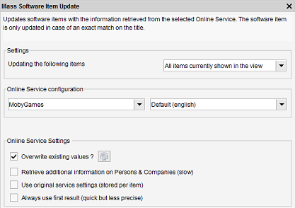

Mass Update
Menu path: Tools > Mass Update
This tools allows you to update the information stored in Data Crow with the (updated) information from your files (such as mp3's)
and/or allows you to use an online service to retrieve missing information.

The availability of online search and/or the file re-parsing depend on the selected module. Mass update might even not
be available altogether for the selected module.
A combination of file re-parsing and online searching can be used to update all the items shown in the view.
Settings
Select which items will be updated. Available options are: "all items currently shown in the view" and "update selected items only".
Online Service Configuration
The Online service configuration is the same as for the normal online search functionality. The settings and options are explained here.
Use original service settings
The service information is stored per item after the item has been retrieved or updated by an online service.
This information can be reused to update the item. This is convenient when you want to make sure the information is in sync with the source from which the item was retrieved.
File processing configuration
Indicate if you want the re-read the information from the files (such as a music file or a video file).